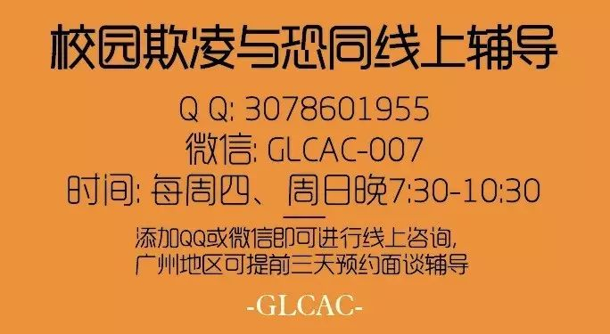

顶着热辣辣的天气，我们在杭州带着来自全国15城市的22位老师和社工走进 Gay吧，在酒吧舞池上疯狂跳舞......
（图：老师们跃身Gay吧舞池！某老师说：“那一刻，我是少数！”）
带着老师和社工走进Gay吧是什么节日吗？TA们都是gay吗？
其实，这是我们第七期性/别教育师资培训的一个部分——当地同志文化之旅！
培训3天里发生了什么？老师和社工为什么要参加性／别教育的培训呢？
别方，小编带你回放！
“因我出生是女孩子，差点被送走。”
第一天上午，老师和社工们分享了他们参加培训的期待，以及对他们有着重大影响的性别事件。
如有老师分享自己曾因出生是女性而差点被送走，有老师因自己的外表、气质等不够像标准的“男女“而遭到嘲笑，也有老师分享自己遇到自杀倾向的同志学生前来咨询。而这些事件也把TA们带到了这个培训。
（图：性别故事分享，相见恨晚的老师们）
“给我最信任的老师出柜，可她再也没搭理我。”
在这个社会里，我们每个人都与性别产生着联系，经历着传统性别规范的束缚。而作为少数的同志更是如此。
所以，下午我们给老师进行了性少数议题大补课后，并邀请了四位LGBT同志面对面分享自己的生命故事，解答了老师们对同志不少的困惑，不少老师惊叹第一次与真实的同志对话！
其中一位女同性恋伙伴说到曾给自己非常信任的老师出柜，却之后被冷落后，感到非常伤心。一度让在场的老师感到心疼。
（图：同志嘉宾故事分享！左往右 言Ada、小吕、青雀、然然）
“天啊！校园正是性别刻板的重灾区？！”
从看到自身与性别的链接，到与同志交流对话，激发了老师对于的性别的思考，而第二天我们回到教育的现场，以猜谜游戏的形式发现校园中的性别现象。
男生在厕所中比大小、男女生桌子的三八线，课本上女性人物的缺失，女生学不好理科，要求穿校服裙的男学生……有老师不仅感叹：“小小校园，问题真多，怎么办呢？”
（图：吴老师分享说发现有女生间常以胸部的大小进行比较，胸部较小的女生常遭嘲笑。）
唠叨了2天！性/别教育到底可以怎样做？
先来个初中性别教育课堂模拟！上课了，老师们！
我们邀请了佛山某中学王老师来到培训现场，她有着10多年开展性别教育的经验，是我们第五期性／别教育培训的优秀学员，已经给其学校16个班的学生进行了一个学期的性别教育课程。
45分钟的课堂让在场老师看到了在中学开展性别教育的可能性，也藉此机会讨论了开展课程的困难与挑战应对。
实践探讨之后，22位参与培训的老师分成了四个小组，讨论并制定自己的性别教育实践计划！在今年12月前，他们每人将进行2次性别教育的课堂！
预告一下，而我们也将在这期间进行多次的电话回访，资料分享，线上课堂分享来回应培训中欲求不满的老师们！哈哈～
（图：小组讨论，给大家呈现成果咯）
（图：性别教育计划满满都是字！！老师脑洞大开，接下来好戏连台）
结束咯！来个美美的大合照、颁发结业证书咯！性别教育期待有你！
高萌预警……
（图：为我们的友谊干杯！）
三天的研习营，老师&社工有话说：
性别教育就是要让人看到差异，尊重多元，TA已经不再是停留在性，性倾向的问题。是我们对于社会性别规范的“质疑”，而这种质疑，其实就是如何看待人与人的差异、尊重不同。
——东阳 刘老师
如果你是学校心理咨询老师，当你面对学生的“性”的困惑不知道该如何帮助他们的，那么来参加研习营吧，这里可以解惑，可以让你看到性别如何影响你，可以让你了解多元性，更加“懂得”LGBT。
——苏州 濮老师
几天的培训下来，接受了如此丰富的信息。思维在彼此的交流讨论中碰撞出了无数的火花。知识的学习很重要，但最大的收获是让我更加会从人的尊严权利，人性的层面的思考问题。我们是不同的个体，但本质又是一样的。最开心的认识那么多可爱的志同道合的小伙伴！
——浙江 陈老师
歧视在当前社会中随处可见，无论是对性少数还是什么别的群体。研习营着眼于性别在做的事情意义重大，声音的传达就是力量，尊重差异，接纳不同。加油，世界和谐需要你们。哈哈。
——南京 肖社工
第一次当着这么多人的说自己的隐秘故事。在这个开放友善安全的环境真的很放松很舒服。更加全面的了解到了性别教育的相关内容。也激发我将之融入到课堂的兴趣。
——浙江 陈老师
马不停蹄地安利！本项目将在腾讯“99公益”中进行网络募款，全部款项将用于2018年4场性／别教育初阶培训以及教育师资年会的支出！
如果你也不想如此棒棒哒的培训就此歇菜？你也想让老师成为支持性别友善、同志好友的一股重要力量！请果断联系后台加入“教师培训捐款伙伴”行列！！！
教师性／别教育师资培训项目
通过提升中小学为主的教师及其校领导的性别、多元性别平等意识，来推动教师在学校开展性别及同志友善教育，从而建立包容的校园环境支持LGBT青少年。项目由初阶营培训、后续为期三个月跟进支持、教师交流年会三个部分组成。目前，项目已让广州、云南、武汉、杭州等城市的230多位老师开展60多次性别教育课堂。
文末彩蛋！！
三天的培训怎能没有同行小伙伴的大力支持！！！
诚意感谢以下机构：
-end-
编辑：小毛
扫一扫，支持我们的工作
扫一扫进入GLCAC读者交流群
